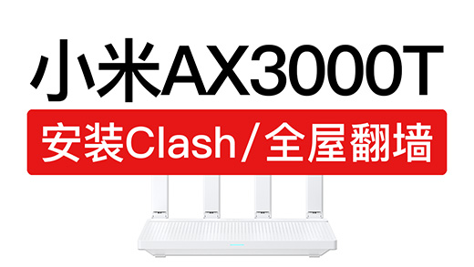
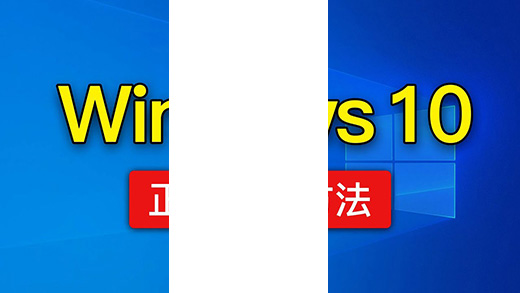
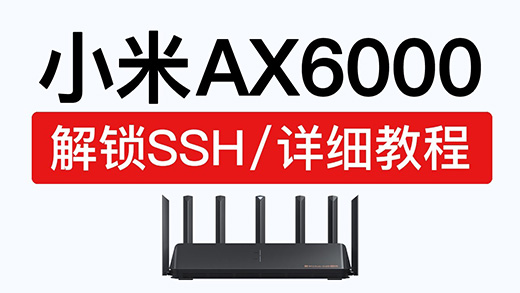

科技分享
首页
机场评测
软件下载
手机翻墙
电脑翻墙
软路由
VPN
干货视频

小米路由器AX3000T解锁SSH，安装ShellCrash科学上网，安装Clash翻墙
宝塔面板安装wordpress教程，wordpress建站搭建新手入门教程，wordpress教学

Windows 10系统安装教学，操作简单！win10重装系统u盘怎么分区，Win10 22H2如何更新？
新电脑安装 windows 11 系统，操作非常简单，设置安装win11|新电脑怎么装作业系统？
新电脑12个常用设置，让电脑更好用！新电脑到手需要做的操作 win11
电视科学上网教程，非常方便，支持大多数电视翻墙，电视翻墙vpn，轻松看youtube

小米路由器AX6000解锁SSH，只需一台电脑轻松搞定，xiaomi ax6000固件刷机，AX9000 ssh
红米路由器AX6000解锁SSH，操作非常简单，redmi ax6000 ssh 固件刷机
小米路由器降级方法，红米路由器固件降级提示：“出于安全考虑，不允许选择低于当前版本号的固件进行升级”